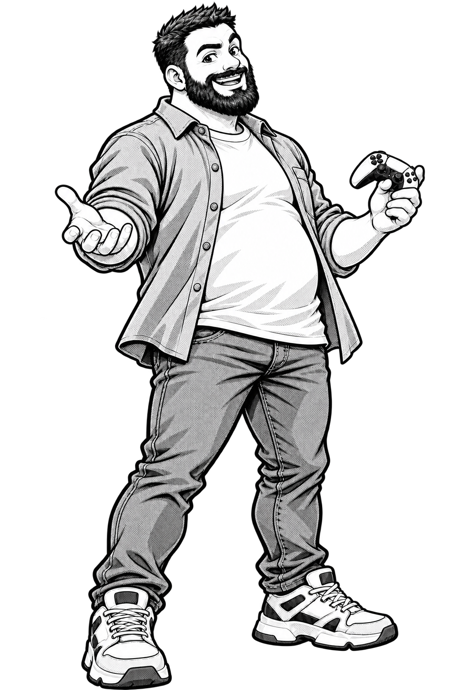

Cahier d’exercices — L’Atelier des phrases
Écris d’abord au crayon. Vérifie ensuite avec le jeu ou le corrigé.

Noireau : chaque compétence revient plusieurs fois, sous des formes différentes. Cherche, écris et explique un choix quand tu le peux.
1–2 · Reconnaître une phrase
Coche les phrases : □ Le chien court. □ dans le jardin □ Une fleur rouge. □ Où vas-tu ?
Complète pour former une phrase : « Dans la cour ».
3 · Remettre les mots dans l’ordre
Écris correctement : une pomme / mange / Lina.
dans le ciel / volent / Les oiseaux.
4 · Sujet et verbe
Souligne le sujet une fois et le verbe deux fois : « Les petits chats dorment. »
Choisis : Les filles (joue / jouent) dans la cour.
5–6 · Groupes et groupe nominal
Sépare les grands groupes : « Le grand arbre abrite un nid. »
Dans une jolie maison, indique : déterminant nom .
7 · Adjectifs
Accorde : une (petit) souris ; des fleurs (rouge) .
Ajoute deux adjectifs à « le chien » :
8 · Sujet et groupe verbal
Place une barre entre le sujet et le groupe verbal : « Les élèves attentifs écoutent la consigne. »
Sujet : Groupe verbal (GV) :
9–10 · Fonction et sens
Dans « Le renard court rapidement dans la forêt le matin », trouve les indications de :
manière lieu temps
Dans « Mila ouvre la fenêtre le matin », indique le complément de verbe (CV) et le complément de phrase (CP).
CV : CP :
11 · Transformer
Mets à la forme négative : « Le chat dort. »
Transforme en question avec Est-ce que : « Tu viens. »
12 · Pronoms et accords
Remplace le sujet : « Les filles chantent. » → chantent.
Choisis : Nous (joue / jouons / jouent). Les enfants (prépare / préparent).
13 · Sujets complexes
Entoure tout le sujet : « Les fleurs du jardin poussent au printemps. »
Dans « Sur la branche chantent les oiseaux », le sujet est .
14 · Défi d’analyse et de construction
Dans « Lina offre un livre à Sami ce matin », écris le complément de verbe direct (CVD), le complément de verbe indirect (CVI) et le complément de phrase (CP).
CVD : CVI : CP :
Écris ensuite une phrase qui contient un sujet enrichi, un verbe, un lieu et un temps.
Transforme ta phrase à la forme négative.
Deuxième parcours · varier les questions
Ces exercices consolident les mêmes notions avec d’autres mots. Tu peux les faire après une série du jeu.
1–2 · Sens et phrase
Entoure les phrases : « Le train arrive. » / « dans la gare » / « La porte grince. » / « un billet rouge ».
Ajoute une action pour transformer « Le vélo… » en phrase.
Explique pourquoi « sous le grand pont » demande une suite.
3 · Ordonner autrement
Remets en ordre : « un livre / Sara / lit ».
Remets en ordre : « dans le pré / saute / Le lapin ».
4 · Identifier et accorder
Dans « Ma sœur arrose les fleurs », souligne le sujet et entoure le verbe.
Choisis : « Les chiens (aboie / aboient) » et « La souris (mange / mangent) ».
Explique un de tes choix :
5 · Construire un groupe
Réunis les mots qui vont ensemble : « maison / une / jolie ».
Dans « Les petites fourmis transportent une feuille », écris le groupe qui désigne celles qui agissent.
6 · Déterminant et nom
Complète « … rivière » avec un déterminant convenable.
Dans « un grand cheval », écris le nom et le déterminant.
Nom : Déterminant :
7 · Adjectifs variés
Accorde : « des arbres (vert) » et « une porte (ouvert) ».
Place un adjectif après le nom dans « un bateau ».
8 · Sujet et groupe verbal
Sépare les groupes : « La jeune musicienne répète une chanson. »
Sujet :
Groupe verbal :
9 · Ajouter et déplacer
Ajoute un lieu et un temps à « Les voisins discutent. »
Réécris ta phrase en échangeant l’ordre du lieu et du temps.
10 · Où, quand, comment ?
Classe selon le sens : « avec soin » / « pendant la nuit » / « dans la cave ».
Lieu : Temps : Manière :
Écris une autre manière de faire une action :
11 · Transformer deux fois
Transforme « Lina chante. » en phrase négative, puis en question avec « Est-ce que ».
Transforme « Le chien aboie. » à la forme négative. Attention à « n’ ».
12 · Pronoms et accords
Remplace « Les garçons » et « La fleur » par des pronoms.
Choisis : « Vous (chante / chantez) » ; « Mes amies (vient / viennent) ».
13 · Sujet long ou inversé
Souligne tout le sujet : « Les oiseaux du grand jardin chantent. »
Entoure le sujet : « Sous le pont passent les bateaux. »
Complète : « Les élèves de cette classe (arrive / arrivent) bientôt. »
14 · Transfert autonome
Dans « Les élèves lisent un conte dans la classe », lequel des deux groupes « un conte » et « dans la classe » peut être déplacé au début sans modifier le sens ? Nomme sa fonction.
Construis une phrase avec un sujet enrichi, un verbe accordé, un lieu et un temps. Les deux indications peuvent changer de place.
Écris une autre version correcte, puis transforme l’une des versions à la forme négative.